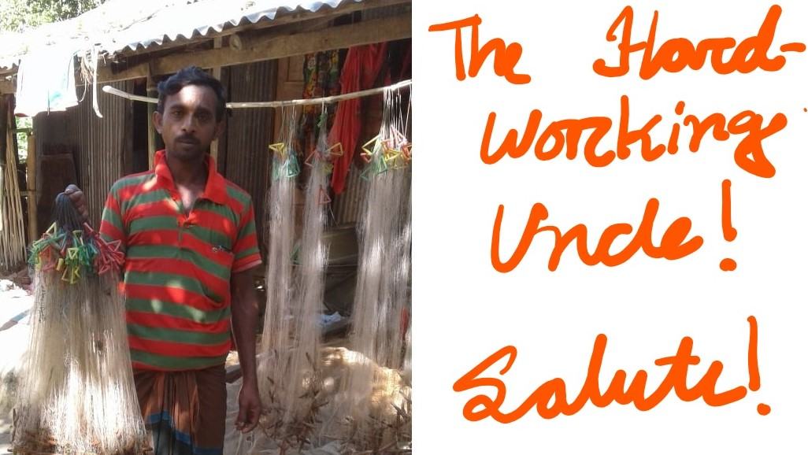
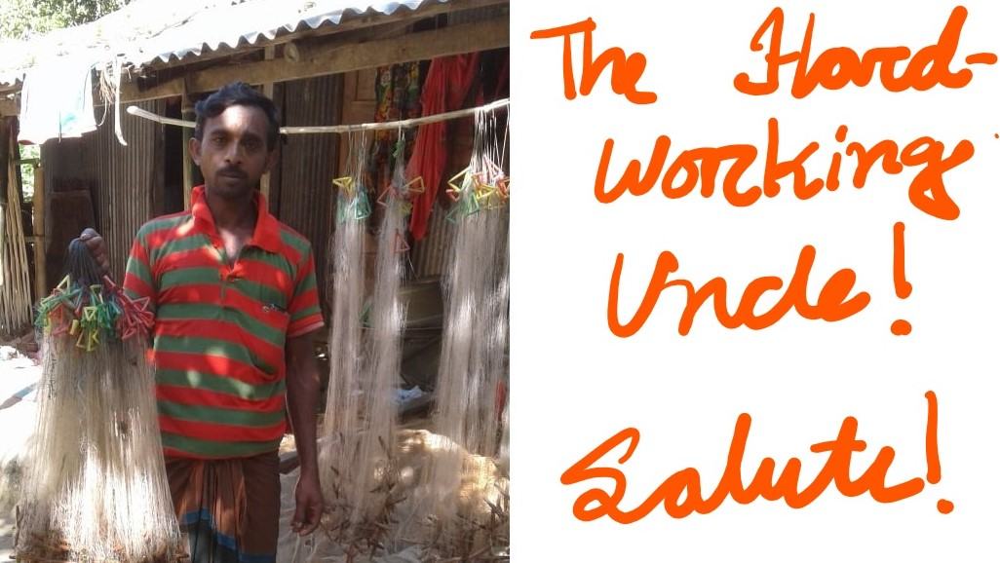

Sehrish is a persian word, which means "Sunrise". It's motivated from our motto, "Let's Rise Together!". We can't change the society in one day but we can contribute towards a positive change every day. Let's rise by making positive impacts and help others to rise with us and we believe you would find a fulfillment of your soul by doing so! We have the concept that the fulfillment of the soul makes a person feel good and brings them inner peace and a person with inner peace glows like a rising sun. So, make yourself rise, help others rise and "Let's rise together!" Checkout our website and you might find a way to make a postive impact in our children's life.